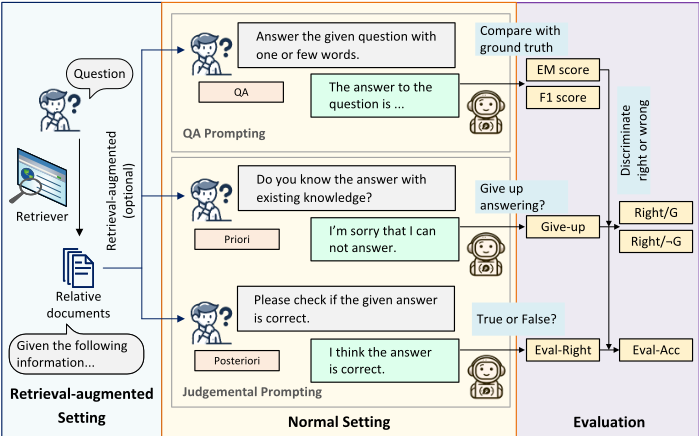
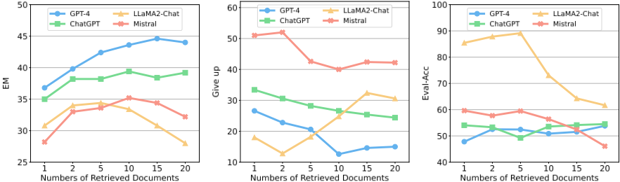
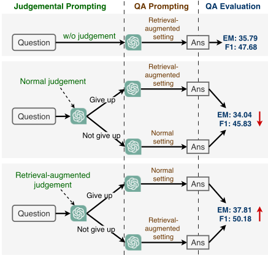
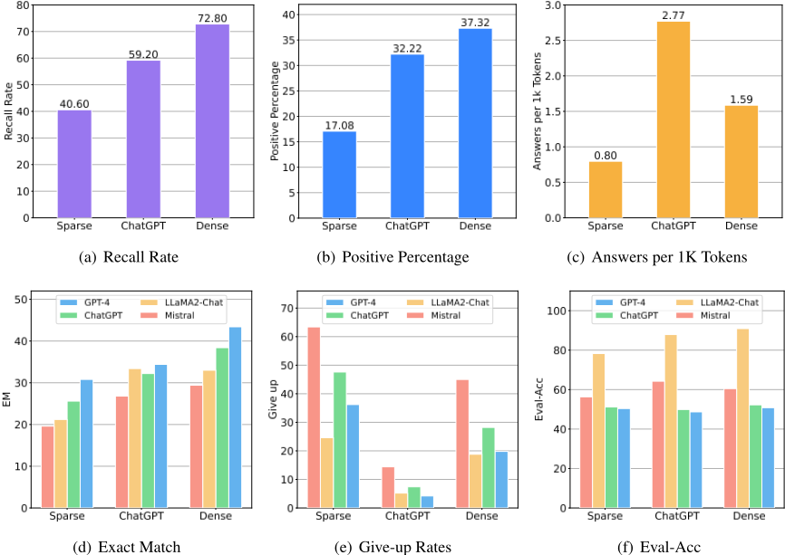
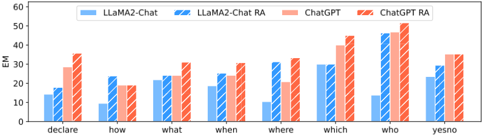
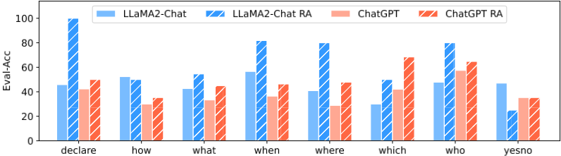
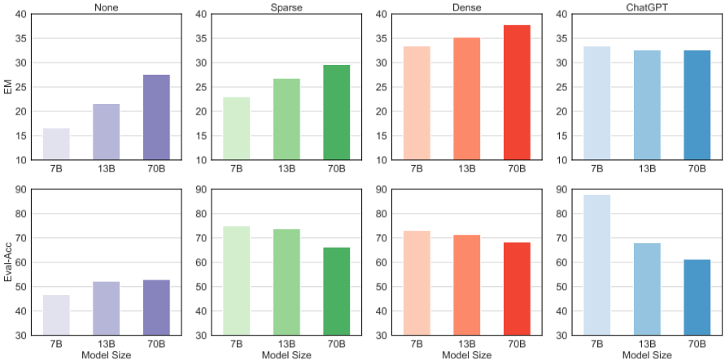

利用检索增强探究 LLM 的事实知识边界
论文首次系统研究 LLM 对自身事实知识边界的感知能力，以及检索增强（RAG）如何影响这种能力。作者在 NQ、TriviaQA、HotpotQA 三个 open-domain QA 数据集上设计 QA prompting 与先验/后验判断（priori/posteriori judgement）提示，配合 Give-up、Eval-Acc 等指标，对比闭卷与检索增强设置，并考察文档数量、相关性、检索源与模型规模等因素。关键结论：LLM 普遍过度自信、无法妥善处理内部与外部知识的冲突；检索增强既能提升 QA 性能，也能显著改善知识边界感知；文档与问题的相关性直接决定模型对文档的依赖与信心，低相关文档反而损害性能；基于先验判断的动态检索增强可超过始终检索的 baseline。对团队而言，它为 RAG 场景中'何时检索、信模型还是信文档、注入多少文档'提供了实证依据与可复用的评测方法。
LLM 虽能在参数中编码大量世界知识，但能否准确感知自身的事实知识边界尚不清楚：模型能否在回答前判断自己是否具备回答问题的知识、评估所给参考文档是否足以回答问题、并在回答后正确评估自己答案的对错；以及检索增强如何影响 LLM 在 open-domain QA 上的生成质量与知识边界感知能力。
在 NQ、TriviaQA、HotpotQA（各采样 500 条）上设计两类自然语言提示：QA prompting（normal 闭卷 / retrieval-augmented 检索增强两种设置）与 judgemental prompting（priori judgement 在回答前判断能否作答，posteriori judgement 在回答后评估答案正确性）。检索源包括 dense retrieval（RocketQAv2 + Faiss）、sparse retrieval（BM25）以及将 ChatGPT 作为'检索器'生成文档；提出 Give-up、Right/G、Right/¬G、Eval-Right、Eval-Acc 等评测指标。系统考察支持文档数量、顺序、质量/相关性（golden、high-related incorrect、weak-related incorrect、random incorrect 四种采样策略）、问题类型与模型参数规模的影响，并提出基于先验判断的动态检索增强方法：仅当模型判断难以作答时才引入支持文档。
闭卷设置下 LLM 普遍过度自信：Give-up 率显著偏低且与实际 QA 能力（EM）不匹配，Right/¬G 偏高；后验判断中 Eval-Right 远高于 EM，而 Eval-Acc 偏低（Table 1）
引入支持文档后 LLM 在多数情况下 QA 性能优于闭卷，dense retrieval 文档通常最佳；检索增强对公开模型（LLaMA2、Mistral）的 QA 与边界感知提升大于闭源模型
在 TriviaQA 上 ChatGPT 与 GPT-4 加入支持文档后性能反而下降，人工检查显示大量坏例源于从文档中抽取了错误内容，多文档引入显著噪声
支持文档数量增加时 EM 先升后停滞甚至下降，阈值因模型而异（LLaMA2 阈值更低）；LLM 对文档顺序不敏感（倒序或打乱不影响性能）；文档数增加时 LLaMA2 与 Mistral 的 Eval-Acc 下降，多数模型 Give-up 率上升
动态检索增强实验（ChatGPT + dense retriever，NQ）：用普通设置先验判断做检索决策会低于始终检索的 baseline，改用检索增强先验判断后准确率超过 baseline
文档质量实验（NQ，每题 10 篇）：golden 文档优于检索结果；三类 incorrect 文档使性能低于不用文档；random incorrect 文档反而优于相关性更高的 incorrect 文档；文档质量越高 Give-up 率越低、Eval-Acc 越高；Golden 设置下不同模型间 EM 差距显著缩小
参数规模分析（LLaMA2 7B/13B/70B）：检索增强对更小模型提升更大，7B 的 EM 与 Eval-Acc 提升均为三者最高；检索源分析显示 ChatGPT 生成文档 recall 显著低于 dense retriever 但 QA 性能接近，LLaMA2 用 ChatGPT 生成文档甚至超过 dense retriever
作者声称是首个针对'检索增强下 LLM 事实知识边界'的系统分析。区别于以往只评测 QA 性能或用自动化方法检测不确定性的工作，本文同时从先验（能否作答）与后验（答案对错）两个视角刻画自我评估能力，给出专门指标体系（Give-up、Eval-Acc 等），系统量化文档相关性/数量/来源/问题类型/模型规模等因素，并提出基于先验判断的动态检索增强这一简单可落地的方法。
相关度级别：high
命中能力域：3.1 上下文工程与记忆 | 3.2 提示工程 | 3.3 Agent 架构与工具使用 | 3.5 评测与可靠使用
理由：论文直接命中 3.1（RAG/检索增强与上下文组织：文档数量、相关性、来源对生成质量与自我评估的影响，是上下文工程的核心实证）与 3.5（提出评测 LLM 自我评估可靠性的指标体系与实证方法，涉及可靠性与信任校准）；judgemental prompting 属于 3.2 的提示技术与模式；基于先验判断决定是否引入检索的动态方法对应 3.3 的工具调用决策与自我反思。对以'用好模型'为核心、构建 RAG 与知识库问答的团队，论文回答了'何时该检索、该信模型还是信文档、放多少文档'等日常工程问题，并提供了可直接复用的评测方法与开源代码。
建议动作：深入精读并做内部分享
arXiv:2307.11019v3 [cs.CL] 2024年11月19日
基于检索增强的大语言模型事实知识边界研究
Ruiyang Ren 1,3 * † Yuhao Wang 1,3 * Yingqi Qu 2 Wayne Xin Zhao 1,3 ‡ Jing Liu 2 ‡
Hao Tian 2 Hua Wu 2 Ji-Rong Ren 1,3 Haifeng Wang 2
中国人民大学高瓴人工智能学院
1 2 百度公司
3 北京市大数据管理与分析方法重点实验室
{reyon.ren, yh.wang, jrwen}@ruc.edu.cn, batmanfly@gmail.com {quyingqi, liujing46, tianhao, wu_hua, wanghaifeng}@baidu.com
大语言模型（Large Language Models, LLMs）在利用世界知识解决广泛任务方面已展现出令人瞩目的能力。然而，LLMs 感知自身事实知识边界的能力究竟如何，尤其是在检索增强（retrieval augmentation）设置下，仍不清楚。在本研究中，我们首次对 LLMs 的事实知识边界以及检索增强如何影响 LLMs 在开放域问答（question answering, QA）上的表现进行了分析，并得出了一系列重要发现。具体而言，我们聚焦于三个研究问题，并通过考察 LLMs 的问答、先验判断（priori judgement）和后验判断（posteriori judgement）能力对其进行分析。我们提供的证据表明，LLMs 对自身知识抱有坚定不移的信心，且无法很好地处理内部知识与外部知识之间的冲突。此外，检索增强被证明是提升 LLMs 知识边界意识的一种有效方法。我们进一步开展了全面的实验，考察不同因素如何影响 LLMs，并提出了一种借助我们的判断策略动态利用支持文档的简单方法。此外，我们发现支持文档与问题之间的相关性会显著影响 LLMs 的问答和判断能力。复现本工作的代码已发布于 https://github.com/RUCAIBox/ LLM-Knowledge-Boundary 。
知识密集型任务因其对大量知识的需求而得名，是自然语言处理领域内一个备受关注的重要方向（Petroni et al., 2021）。此类任务的一个典型例子是开放域问答（QA）（Chen et al., 2017），它需要信息检索系统（Zhao et al., 2023）的辅助来获取相关信息。随后，采用阅读理解模型来识别并提取相关信息，最终生成最终答案。
* 同等贡献。
† 该工作完成于百度实习期间。
‡ 通讯作者。
近年来，大型语言模型（LLMs）在解决各类任务方面展现出卓越的能力，它们能够在参数中编码海量的世界知识（Brown et al., 2020a; Ouyang et al., 2022; Zhao et al., 2023）。尽管能力出众，LLMs 在知识密集型任务中可能表现出有限的灵活性，因而需要引入检索增强策略。若干开创性工作已将 LLMs 应用于开放域问答任务（Qin et al., 2023; Kamalloo et al., 2023; Wang et al., 2023a; Sun et al., 2023; Xu et al., 2024）。通常，这些工作主要聚焦于评估 LLMs 的问答性能，讨论改进的评估方法，或利用 LLMs 来增强问答模型。已有工作还通过自动化方法检测 LLMs 的不确定性（Yin et al., 2023）。此外，幻觉问题给 LLMs 的可靠部署带来了挑战，而检索增强被认为是缓解幻觉的一种有效方法（Li et al., 2024; Shuster et al., 2021; Wang et al., 2023b）。
尽管现有研究做出了贡献，但对于 LLMs 感知自身事实知识边界的能力，尤其是在可以使用外部资源的情况下，仍缺乏深入的理解。例如，LLMs 能否评估自身回答问题的能力、判断所提供的参考资料是否足以解决这些问题、以及评估自身答案的准确性，这些仍不确定。我们的主要关注点是 LLMs 的事实知识边界，并研究检索增强对 LLMs 生成的影响。
为此，我们对检索增强对大语言模型（LLMs）生成质量的影响进行了深入分析，特别关注问答（QA）性能以及 LLMs 对自身事实知识边界的感知。为了充分探索 LLMs 的知识边界，我们考虑了多种 LLMs，包括闭源 LLMs 和公开可用的 LLMs。为了衡量知识边界感知能力，我们考虑了两种可供选择的方法。第一种是先验判断（priori judgement），即 LLMs 在回答生成过程之前评估回答给定问题的可行性。第二种是后验判断（posteriori judgement），即 LLMs 在回答生成过程之后评估其对问题回答的正确性。这两种方法可以从不同角度评估 LLMs 的知识边界感知能力。在检索增强方面，我们采用多个检索模型为 LLMs 提供与给定问题相关的支持文档。
为了开展全面的调查研究，本工作旨在逐步回答三个研究问题：(i) LLMs 能在多大程度上感知自身的事实知识边界？(ii) 检索增强对 LLMs 有什么影响？(iii) 具有不同特征的支持文档如何影响 LLMs？
我们设计了全面的实验，以逐一深入探索这些研究问题。此外，在先验判断的基础上，我们尝试了一种简单的方法，通过动态地为 LLMs 引入检索增强来获得性能提升。基于实证分析，我们得出了与三个研究问题相对应的以下重要发现：
信度，并倾向于依赖所提供的信息来生成回答。依赖程度和 LLMs 的置信度取决于支持文档与问题之间的相关性。
在本节中，我们概述了对本研究至关重要的背景和基本方法论。
我们在开放域问答（QA）任务上开展实验，该任务可描述如下。给定一个自然语言问题 q 以及一个大型文档集合 D = { d i } m i =1（例如 Wikipedia），模型需要借助所提供的语料库 D 给出问题 q 的答案 a。借助大语言模型（LLMs），开放域问答任务可以在闭卷（closed-book）设置下以端到端的方式直接求解（Qin et al., 2023）。给定问题 q，LLM 可以通过遵循特定输出格式的提示 p 生成答案 a：
在通过检索增强 LLM 时，一种典型的策略是设计提示 p，指示 LLM 利用检索器（retriever）检索到的支持文档 L 来给出问题 q 的答案 a：
公式 1 和公式 2 给出了 LLM 求解问答任务的两种方法，我们也采用这两种方法来评估 LLM 的事实知识边界。
我们考虑两种指令设置，即问答提示（QA prompting）和判断式提示（judgemental prompting）。图 1 对我们的提示策略进行了整体说明，详细指令可参见附录 A.5。
为了评估大语言模型（LLM）利用知识的能力，我们聚焦于 LLM 的问答（QA）能力，即针对给定问题提供答案的能力，其目的有两个方面。首先，我们力求确保 LLM 能够准确作答，并同时引用内部知识与外部知识。其次，我们鼓励模型给出简洁的回答，以匹配简答题格式，从而能够使用常用指标进行评估。为此，我们提出了两种不同的指令方式。（1）常规设置（Normal setting）：在该方式下，LLM 被指示仅依据其内部知识来回答问题，如公式 (1) 所表述。（2）检索增强设置（Retrieval-augmented setting）：该方式要求 LLM 结合其内部知识与所检索到的支持文档中的信息来回答给定问题，如公式 (2) 所概述。在这一设置中，支持文档是可选的；理想情况下，LLM 应根据支持文档的可靠性来决定是否参考它们。

To investigate whether LLMs are capable of perceiving their own factual knowledge boundary, we propose judgemental prompting to evaluate the judging abilities of LLMs.
Similar to QA prompting, the concepts of the normal setting and the retrieval-augmented setting are also applicable for judgemental prompting, where LLMs utilizing their own knowledge or consulting supporting documents from retrievers to carry out the judgement process. Furthermore, we construct instructions from different judgement perspectives. (1) Priori judgement: LLMs are tasked with determining their capability to provide an answer to the question, employing either the normal setting or the retrieval-augmented setting. Priori judgment is carried out before the answering of LLMs, through this predictive approach, we are able to evaluate the confidence levels and assessment accuracies of LLMs in their mastery of knowledge. (2) Posteriori judgement: LLMs are tasked with evaluating the correctness of the answer to the question provided by itself, employing either a normal setting or a retrieval-augmented setting. Posteriori judgement aims to enable LLMs to judge their responses. Through this reflective approach, we can evaluate the confidence levels and assessment accuracies of LLMs in the content they generate.
在本部分中，我们针对开放域问答（open-domain QA）搭建了实验设置，包括评估指标与检索来源。由于篇幅限制，更多设置可参见附录 A，包括数据集、评估模型、实现细节以及指令设计。
遵循先前的工作（Chen et al., 2017; Izacard and Grave, 2021a; Sun et al., 2023），我们使用精确匹配（exact match, EM）分数和 F1 分数来评估大语言模型（LLMs）的问答性能。EM 计算 LLMs 预测的答案与问题正确答案精确匹配的问题所占的百分比。F1 用于衡量预测答案与正确答案之间的重叠程度，通过取精确率（precision）和召回率（recall）的调和平均数，将二者合并为单一指标。
我们还提出了若干用于评估 LLMs 判断能力的指标。Give-up 表示 LLMs 放弃回答的问题所占的百分比，反映了 LLMs 对自身是否具备相关知识的判断。Right/G 表示 LLMs 放弃回答但实际上能够正确回答的概率。Right/ ¬ G 表示 LLMs 不放弃回答且能够正确回答的概率。Eval-Right 指 LLMs 将自身答案评估为正确的问题所占的比例。Eval-Acc 表示 LLMs 对答案的评估与事实相符的问题所占的百分比。其中，Give-up、Right/G 和 Right/ ¬ G 是先验判断指标，Eval-Right 和 Eval-Acc 是后验判断指标。所有指标如图 1 所示。
我们考虑使用多种检索来源来获取支持文档，包括稠密检索（Gao and Callan, 2021; Ren et al., 2021a; Zhuang et al., 2022; Zhou et al., 2022）、稀疏检索（Robertson et al., 2009）以及 ChatGPT。
对于稠密检索器，我们使用 RocketQAv2（Ren et al., 2021b）为问题查找语义相关的文档。为此，我们在每个数据集上使用构建的领域内训练数据，按照 RocketQAv2 的设置对模型进行训练，并利用 Faiss（Johnson et al., 2019）从候选语料库中为每个问题获取相关文档。对于稀疏检索器，我们使用 BM25（Yang et al., 2017）为问题查找词汇相关的文档。与先前的工作（Yu et al., 2022; Ren et al., 2023）类似，我们将生成式语言模型视为一个从其记忆中“检索”知识的“检索器”，即指示 ChatGPT 针对给定问题生成相关文档。检索结果见附录 A.4。
在本节中，我们专注于解决这三个研究问题，并采用第 2.2 节中提出的策略，通过考察大语言模型（LLM）的判断能力和问答（QA）能力来逐一应对这些问题。
我们对这一问题进行解构，并考察以下几点：(a) 回答之前：LLM 如何决定拒答某个问题？(b) 回答时：LLM 能否准确回答给定的问题？(c) 回答之后：LLM 如何评估其答案的正确性？
| LLM. | QA.EM | QA.F1 | Priori Judgement.Give-up | Priori Judgement.Right/ ¬ G | Posteriori Judgement.Eval-Right | Posteriori Judgement.Eval-Acc |
|---|---|---|---|---|---|---|
| Davinci003 | 27.2 | 36.2 | 29.20% | 32.77% | 72.80% | 45.01% |
| ChatGPT | 33.4 | 45.32 | 57.40% | 42.72% | 84.40% | 43.40% |
| NQ GPT-4 | 34.6 | 48.72 | 15.20% | 39.15% | 90.20% | 38.87% |
| LLaMA2 | 16.6 | 24.26 | 6.60% | 17.56% | 58.40% | 46.74% |
| Mistral | 11.2 | 19.3 | 49.80% | 15.94% | 68.00% | 37.90% |
| Davinci003 | 65.2 | 69.57 | 7.40% | 67.17% | 87.00% | 69.82% |
| ChatGPT | 69 | 75.29 | 25.00% | 75.73% | 88.80% | 71.95% |
| TriviaQA GPT-4 | 75.8 | 84.52 | 8.80% | 77.85% | 93.00% | 76.57% |
| LLaMA2 | 48.8 | 53.4 | 4.80% | 50.21% | 75.60% | 57.60% |
| Mistral | 36.2 | 42.09 | 34.80% | 46.63% | 86.00% | 48.10% |
| Davinci003 | 18.4 | 26.78 | 35.40% | 24.15% | 70.60% | 43.99% |
| ChatGPT | 20.8 | 29.27 | 78.40% | 31.48% | 66.80% | 43.12% |
| HotpotQA GPT-4 | 28.6 | 40.33 | 54.80% | 42.92% | 72.40% | 45.74% |
| LLaMA2 | 11.4 | 16.88 | 25.60% | 12.63% | 49.80% | 54.88% |
| Mistral | 10.8 | 17.86 | 64.00% | 19.44% | 81.80% | 27.40% |
| LLM. | QA.EM | QA.F1 | Priori Judgement.Give-up | Priori Judgement.Right/ ¬ G | Posteriori Judgement.Eval-Right | Posteriori Judgement.Eval-Acc |
In this part of the experiments, we employ the priori judgement with the normal setting to instruct LLMs on the decision of whether to give up answering questions based on their inherent knowledge, and we use the QA prompting with the normal setting to instruct LLMs to provide answers. Moreover, we employ posteriori judgement with the normal setting to instruct LLMs in evaluating the correctness of their answers.
知识边界，并且往往过于自信。总体而言，从表 1 中可以看出，大语言模型（LLMs）的高估现象在回答问题之前和之后均十分明显。在回答之前，LLMs 经常高估自身的知识，导致错误回答的比例很高（Right/¬G）。此外，它们的放弃率（Give-up rate）相当低，与其实际的问答（QA）能力（由 EM 反映）不相符。当我们指示 LLMs 对其答案进行评估以进行事后判断（posteriori judgement）时，它们也表现出一种显著的倾向，即认为自己的答案是正确的。正因如此，我们可以观察到远高于 EM 的 Eval-Right 值。然而，Eval-Right 值与实际评估准确率之间存在着巨大差距，这一点从相对较低的 Eval-Acc 指标中可以得到印证。与先前的研究（Kamalloo et al., 2023）类似，即使没有外部文档，LLMs 在 QA 任务中仍然展现出值得称道的性能（EM 和 F1）。这表明 LLMs 拥有相当可观的知识库，并能在一定程度上对其加以利用。此外，可以观察到，闭源 LLMs 总体上比我们所使用的公开可用 LLMs 展现出更好的 QA 性能，其中 GPT-4 取得了最佳的 QA 性能。总体而言，闭源 LLMs 在感知其事实知识边界方面表现出更高的准确性。
| Datasets. | LLMs. | Retrieval Source. | QA.EM | QA.F1 | Priori Judgement.Give-up | Priori Judgement.Right/G | Priori Judgement.Right/ ¬ G | Posteriori Judgement.Eval-Right | Posteriori Judgement.Eval-Acc |
|---|---|---|---|---|---|---|---|---|---|
| NQ | Sparse | 27.80 | 38.29 | 21.20% | 12.26% | 31.98% | 39.40% | 67.94% | |
| Davinci003 | Dense | 39.00 | 51.27 | 12.80% | 14.06% | 42.66% | 46.40% | 71.43% | |
| ChatGPT | 34.00 | 47.36 | 6.20% | 6.45% | 35.82% | 46.00% | 71.54% | ||
| Sparse | 28.40 | 41.10 | 42.40% | 17.92% | 36.11% | 67.00% | 48.77% | ||
| ChatGPT | Dense | 39.40 | 52.65 | 26.60% | 18.05% | 47.14% | 68.80% | 53.56% | |
| ChatGPT | 32.20 | 47.37 | 7.40% | 2.70% | 34.56% | 78.80% | 49.90% | ||
| Sparse | 34.20 | 45.81 | 28.20% | 14.18% | 42.06% | 57.20% | 48.48% | ||
| GPT-4 | Dense | 43.60 | 56.36 | 12.60% | 15.87% | 47.60% | 66.40% | 50.86% | |
| ChatGPT | 34.40 | 48.56 | 4.20% | 4.76% | 35.70% | 69.80% | 48.69% | ||
| Sparse | 23.00 | 34.14 | 32.80% | 15.85% | 26.49% | 6.00% | 75.00% | ||
| LLaMA2 | Dense | 33.40 | 45.39 | 24.80% | 20.16% | 37.77% | 5.20% | 73.08% | |
| ChatGPT | 33.40 | 48.19 | 5.20% | 15.38% | 34.39% | 5.00% | 87.88% | ||
| Sparse | 23.20 | 33.21 | 59.00% | 13.22% | 37.56% | 48.60% | 54.71% | ||
| Mistral | Dense | 35.20 | 45.82 | 40.00% | 21.50% | 44.33% | 50.20% | 56.39% | |
| ChatGPT | 32.60 | 47.49 | 14.40% | 16.67% | 35.28% | 41.00% | 64.24% | ||
| Sparse | 64.60 | 70.19 | 15.60% | 19.23% | 72.99% | 69.00% | 77.15% | ||
| Davinci003 | Dense | 69.60 | 75.31 | 10.00% | 30.00% | 74.00% | 74.40% | 81.49% | |
| ChatGPT | 67.40 | 75.43 | 2.00% | 10.00% | 68.57% | 72.20% | 81.00% | ||
| Sparse | 62.60 | 69.98 | 23.00% | 34.78% | 70.91% | 73.29% | |||
| ChatGPT | 18.20% | 79.80% | |||||||
| Dense ChatGPT | 66.20 65.00 | 74.75 74.44 | 3.00% | 39.56% 13.33% | 72.13% 66.60% | 82.40% 90.40% | 75.73% 74.34% | ||
| Sparse | 66.20 | 75.99 | 12.40% | 35.48% | 70.55% | 83.40% | 76.79% | ||
| TriviaQA | GPT-4 | Dense | 69.00 | 78.01 | 7.20% | 30.56% | 71.98% | 85.80% | 76.51% |
| ChatGPT | 66.40 | 76.33 | 2.60% | 15.38% | 67.76% | 83.40% | 73.39% | ||
| Sparse | 51.00 | 59.51 | 35.60% | 40.45% | 56.83% | 13.20% | 70.19% | ||
| LLaMA2 | Dense | 58.60 | 66.57 | 33.40% | 40.72% | 67.57% | 11.40% | 75.00% | |
| ChatGPT | 63.00 | 71.76 | 2.80% | 28.57% | 63.99% | 18.20% | 79.35% | ||
| 20.39% | 66.09% | 68.75% | |||||||
| Mistral | Sparse | 52.20 | 59.55 | 30.40% | 26.45% | 67.28% | 59.20% | 72.53% | |
| Dense ChatGPT | 57.40 62.20 | 65.59 71.72 | 24.20% 3.60% | 16.67% | 63.90% | 59.80% 55.20% | 77.76% | ||
| Sparse | 31.20 | 40.95 | 27.20% | 14.71% | 37.36% | 31.20% | 76.84% | ||
| 37.00% | 13.51% | 34.60% | 35.20% | ||||||
| Dense | 26.80 | 35.89 | 76.89% | ||||||
| Davinci003 | ChatGPT | 28.20 | 39.34 | 8.20% | 12.20% | 29.63% | 33.40% | 77.37% | |
| Sparse | 29.60 | 41.28 | 50.60% | 17.39% | 42.11% | 51.80% | 54.90% | ||
| ChatGPT | Dense | 26.40 | 35.75 | 58.40% | 14.38% | 43.27% | 48.20% | 56.10% | |
| ChatGPT | 26.40 | 38.30 | 11.20% | 7.14% | 28.83% | 68.20% | 48.24% | ||
| Sparse | 36.00 | 47.71 | 25.60% | 14.84% | 43.28% | 43.40% | 64.90% | ||
| HotpotQA | GPT-4 | Dense | 31.80 | 43.92 | 37.00% | 17.30% | 40.32% | 46.00% | 60.34% |
| ChatGPT | 29.80 | 41.67 | 8.80% | 6.82% | 32.02% | 48.40% | 68.55% | ||
| Sparse | 30.15% | 8.60% | 58.89% | ||||||
| 24.00 | 33.45 | 45.60% | 16.67% | ||||||
| LLaMA2 | Dense | 21.60 | 31.17 | 57.00% | 13.68% | 32.09% | 7.60% | 66.99% | |
| ChatGPT | 25.80 | 37.56 | 11.80% | 22.03% | 26.30% | 7.20% | 82.53% | ||
| Mistral | 25.00 | 35.49 | 52.40% | 62.42% | |||||
| Sparse | 23.60 | 32.70 | 59.80% | 13.74% | 37.39% | 42.40% | 59.75% | ||
| Dense | 26.20 | 37.93 | 13.38% | 38.81% 28.37% | 45.60% 37.60% | 70.04% | |||
| ChatGPT | 14.00% | 12.86% |
| Datasets. | LLMs. | Retrieval Source. | QA.EM | QA.F1 | Priori Judgement.Give-up | Priori Judgement.Right/G | Priori Judgement.Right/ ¬ G | Posteriori Judgement.Eval-Right | Posteriori Judgement.Eval-Acc |
Following the analysis under the closed-book setting, we next study the retrieval augmentation setting. Specifically, with the supporting documents from retrievers, we employ the priori judgement to determine whether to give up answering, and the posteriori judgement to assess the correctness of answers generated by LLMs. Additionally, we employ QA prompting to guide LLMs in answering the questions.
我们从三个角度展开分析：知识利用、知识边界的识别，以及来自不同来源的文档所产生的影响。在针对表2中不同设置进行了充分的检索增强实验之后，我们得出以下发现。
大语言模型（LLM）无法充分地利用其内部知识，而检索增强可以作为LLM宝贵的知识补充。可以观察到，在大多数情况下，配备支持文档的LLM优于闭卷LLM，并且将稠密检索的结果作为支持文档纳入往往能带来最佳性能。为了进一步探究不同检索来源的影响，我们在附录B.1中进行了更详细的分析。尽管LLM在训练期间已经从维基百科中学习了海量知识（Ouyang et al., 2022），为其提供维基百科文档仍然能够提升其问答（QA）能力，这表明LLM无法有效利用其在预训练阶段学到的知识。此外，我们发现检索增强对公开可用的LLM在QA性能上带来了更高的提升。我们推测这一现象源于这些参数规模更大的闭源LLM存储了更多的知识，从而在引入外部知识时增益较低。我们还观察到，在TriviaQA上纳入支持文档时，ChatGPT和GPT-4的性能出现了下降。我们人工检查了那些最初回答正确但在纳入检索后回答错误的失败案例，发现其中很大一部分是由于从支持文档中提取了错误内容所致。鉴于ChatGPT和GPT-4在TriviaQA上相对较高的性能，我们怀疑多个支持文档可能引入了显著的噪声，这在一定程度上反映了检索增强所能带来提升的上限（将在3.3节进一步讨论）。

检索增强提升了LLM感知其事实知识边界的能力。从表2中我们发现，在纳入来自稀疏检索器或稠密检索器的支持文档之后，LLM自我评估的准确度有所提升。对于先验判断，Right/¬G 呈现出显著增长，超过了 Right/G 的增长轨迹（该增长归因于QA性能的显著提升）。此外，在某些情境下，Right/G 出现了下降。这些结果表明，检索增强的LLM所做出的先验判断更为准确。对于后验判断，Eval-Right 有所下降，从而与EM指标更加一致，而 Eval-Acc 则显著提升。这些结果表明，检索增强还能够提高LLM后验判断的准确性。
在低于模型特定阈值的范围内，增加支持文档的数量可以提升大语言模型的性能。在图 2 中，我们进一步探究了支持文档数量对检索增强大语言模型的影响。随着数量的增加，问答（QA）性能（EM）逐渐上升，直至达到某一阈值；超过该阈值后，性能不再提升，甚至可能出现下降。我们发现 LLaMA2 表现出较低的阈值，这可能是由于其长文本处理能力不如 GPT 系列大语言模型（Xu et al., 2023; Jiang et al., 2023b）。我们还观察到，支持文档数量增加所带来的提升并不能完全归因于召回率的提高。即使所有文档都是第 3.3.1 节中所描述的黄金文档（golden documents），更大的文档数量仍会带来提升。此外，大语言模型似乎对检索到的文档的排序并不敏感，因此当支持文档被反转或打乱顺序时，性能依然不受影响。就感知知识边界的准确性而言，LLaMA2 和 Mistral 的 Eval-Acc 均随着文档数量的增加而下降。我们还发现，随着支持文档数量的增加，除 LLaMA2 外，大多数模型的置信水平（Give-up）均有所上升。

除上述发现外，我们还探究了检索增强对不同查询类型以及具有不同参数量的大语言模型的影响，并得到以下发现：（1）在低于模型特定阈值的范围内，增加支持文档的数量可以提升大语言模型的性能。（2）检索增强对参数量较少的大语言模型的提升作用更为显著，这同时体现在问答性能和知识边界感知的准确性上。由于篇幅有限，关于这两项发现的全面分析可参见附录 B.2 和 B.3。
我们已经探索了检索增强对大语言模型（LLMs）的影响。实际上，检索结果由相关性各不相同的文档组成，这可能会带来不同的效果。为此，我们继续研究支持文档的不同相关性如何影响 LLMs。在我们的实验中，我们考虑了以下几个视角：文档与问题之间的相关性，以及文档中是否包含答案。
为了深入研究支持文档对 LLMs 的影响，我们提出向 LLMs 提供具有不同特征的支持文档来获取答案。黄金文档是指包含该问题至少一个正确答案的文档，它们从该问题的前 100 个检索结果中自上而下进行采样；高相关错误文档是指与问题高度相关但不包含正确答案的文档，它们同样从该问题的前 100 个检索结果中自上而下进行采样；弱相关错误文档是与查询弱相关且不包含正确答案的文档，我们从该问题的前 100 个检索结果中排除高相关错误文档后随机采样文档；随机错误文档是指从整个语料库 D 中随机采样的文档，它们不包含给定问题的正确答案。
| LLMs | Supporting Doc | EM | F1 | Give-up | Right/G | Right/ ¬ G | Eval-Right | Eval-Acc |
|---|---|---|---|---|---|---|---|---|
| Davinci-003 | None | 27.2 | 36.2 | 29.20% | 13.70% | 32.77% | 72.80% | 45.01% |
| Davinci-003 | Golden | 50.6 | 62.93 | 15.80% | 15.19% | 57.24% | 52.00% | 71.08% |
| Davinci-003 | Retrieved | 39 | 51.27 | 12.80% | 14.06% | 42.66% | 46.40% | 71.43% |
| Davinci-003 | High-related | 10.2 | 20.66 | 18.00% | 8.89% | 10.49% | 28.40% | 57.89% |
| Davinci-003 | Weak-related | 11.8 | 19.69 | 41.40% | 10.63% | 12.63% | 20.80% | 61.71% |
| Davinci-003 | Random | 23 | 30.82 | 88.40% | 20.59% | 41.38% | 19.40% | 66.26% |
| ChatGPT | None | 33.4 | 45.32 | 57.40% | 26.48% | 42.72% | 84.40% | 43.40% |
| ChatGPT | Golden | 50 | 64.28 | 22.60% | 23.01% | 57.88% | 75.20% | 53.24% |
| ChatGPT | Retrieved | 39.4 | 52.65 | 26.60% | 18.05% | 47.14% | 68.80% | 53.56% |
| ChatGPT | High-related | 16.2 | 28.2 | 42.00% | 13.81% | 17.93% | 56.20% | 47.82% |
| ChatGPT | Weak-related | 18.4 | 29.86 | 60.20% | 16.61% | 21.11% | 49.80% | 46.21% |
| ChatGPT | Random | 24.8 | 35.35 | 91.00% | 23.30% | 40.00% | 29.80% | 48.80% |
| GPT-4 | None | 34.6 | 48.72 | 15.20% | 9.21% | 39.15% | 90.20% | 38.87% |
| GPT-4 | Golden | 53.6 | 67.36 | 15.60% | 20.51% | 59.72% | 73.00% | 53.58% |
| GPT-4 | Retrieved | 43.6 | 56.36 | 12.60% | 15.87% | 47.60% | 66.40% | 50.86% |
| GPT-4 | High-related | 21.6 | 35.13 | 39.20% | 24.49% | 19.74% | 62.40% | 47.21% |
| GPT-4 | Weak-related | 24.4 | 34.83 | 61.20% | 24.18% | 24.74% | 60.00% | 44.96% |
| GPT-4 | Random | 34.4 | 45.43 | 71.40% | 25.49% | 56.64% | 54.00% | 42.50% |
| LLaMA2 | None | 16.6 | 24.26 | 6.60% | 3.03% | 17.56% | 58.40% | 46.74% |
| LLaMA2 | Golden | 48.6 | 61.33 | 18.40% | 29.35% | 52.94% | 7.60% | 72.12% |
| LLaMA2 | Retrieved | 33.4 | 45.39 | 24.80% | 20.16% | 37.77% | 5.20% | 73.08% |
| LLaMA2 | High-related | 9.4 | 19.07 | 30.60% | 8.50% | 9.80% | 4.80% | 67.86% |
| LLaMA2 | Weak-related | 8.8 | 16 | 50.20% | 9.16% | 8.43% | 6.20% | 59.09% |
| LLaMA2 | Random | 13.2 | 19.34 | 93.40% | 13.28% | 12.12% | 5.80% | 58.97% |
| Mistral | None | 11.2 | 19.3 | 69.80% | 8.02% | 18.54% | 78.20% | 31.65% |
| Mistral | Golden | 47.8 | 60.93 | 39.60% | 28.28% | 60.60% | 50.20% | 58.67% |
| Mistral | Retrieved | 35.2 | 45.82 | 40.00% | 21.50% | 44.33% | 50.20% | 56.39% |
| Mistral | High-related | 5.6 | 14.23 | 58.40% | 4.11% | 7.69% | 47.60% | 53.35% |
| Mistral | Weak-related | 5.4 | 11.21 | 76.80% | 3.91% | 10.34% | 46.60% | 53.48% |
| Mistral | Random | 12.4 | 18.4 | 98.40% | 11.79% | 50.00% | 64.80% | 33.57% |
| LLMs | Supporting Doc | EM | F1 | Give-up | Right/G | Right/ ¬ G | Eval-Right | Eval-Acc |
我们采用 Wikipedia 作为文档语料库，并针对每种采样策略，从稠密检索器获取的检索结果中为每个问题采样十个文档。
当获得更高质量的支撑文档时，大语言模型（LLM）在问答（QA）能力和知识边界感知方面展现出更强的能力。我们采用 3.3.1 节中的采样策略为每个问题获取支撑文档。表 3 给出了结果。可以看到，使用黄金（高质量）文档作为支撑文档比使用检索结果能取得更好的性能。然而，如果使用错误（低质量）文档，包括高相关错误文档、弱相关错误文档和随机选取的错误文档，LLM 的性能可能会受损，导致其性能低于将检索结果用作支撑文档或在不使用支撑文档的情况下作答的情形。此外，随着支撑文档质量的提升，LLM 的放弃率随之下降，这表明在高质量支撑文档的加持下，LLM 表现出更高的置信度。而且，随着支撑文档质量的提升，LLM 的 Eval-Acc 率上升，说明 LLM 在感知其事实知识边界方面表现出更高的准确度。
LLM 无法很好地处理内部知识与外部知识之间的冲突。基于上述观察，当 LLM 使用低质量支撑文档生成回答时，其性能低于基于内部知识（不使用检索增强）生成回答的性能。这一现象表明，LLM 在生成过程中高度依赖给定的支撑文档。值得注意的是，我们在提示中为 LLM 提供了自行决定是否对某个问题使用支撑文档的选项。然而，在这一设置下，LLM 仍然倾向于依赖支撑文档来回答问题。此外，与 Retrieval 设置相比，不同模型之间的 EM 差距在 Golden 设置下显著缩小，这表明对无关文档的抵抗能力较差是阻碍检索增强 LLM 性能的一个关键因素。
LLM 对支撑文档的置信度和依赖程度由问题与支撑文档之间的相关性决定。在表 3 中，我们观察到相关性与 LLM 的置信度（即放弃作答以及将自身答案评估为正确的概率）之间存在明显的反向关系。此外，使用随机错误文档作为支撑文档的效果优于使用相关性更高的错误文档（即高相关/弱相关错误文档）。这一观察进一步表明，LLM 会更加关注相关文档。
在本文中，我们通过提出先验与后验判断式提示策略，以及用于评估的问答（QA）提示，深入研究了检索增强条件下大语言模型（LLM）对事实知识边界的感知。我们得到了若干关键发现。（1）LLM 无法准确感知其事实知识边界，也无法很好地处理内部知识与外部知识之间的冲突。（2）LLM 无法充分利用其内部知识，而检索增强能有效增强其对事实知识边界的感知。该能力还受到多种因素的影响，例如检索模型的选择、支撑文档数量、问题类型以及 LLM 的规模。（3）支撑文档的相关性会显著影响 LLM 对支撑文档的依赖程度。我们还提出了一种简单的方法，该方法基于 LLM 的先验判断来动态利用检索增强。
本文对大语言模型（LLM）的知识边界进行了全面而详细的分析，涵盖公开可用的模型和闭源模型。由于闭源 LLM 的 API 会随时间推移而更新，可能导致先前的 API 接口无法访问，因此论文中相应结果的长期可复现性存在潜在风险。为解决这一问题，我们可以保留由存在可复现性风险的 LLM 所生成的响应，以备将来使用。值得注意的是，本文提供了一种评估 LLM 知识边界的方法论，该方法可应用于任何最新的 LLM。因此，这一风险并不影响我们贡献的重要性。
我们收集了三个被广泛采用的开放域问答（QA）基准测试（benchmark）数据集。Natural Questions（NQ）（Kwiatkowski et al., 2019）由问答对组成，其问题来源于真实用户的 Google 搜索查询，答案由人类专家标注。TriviaQA（Joshi et al., 2017）由带有标注答案及相应证据文档的琐事（trivia）问题组成。HotpotQA（Yang et al., 2018）是一个综合性数据集，包含需要通过多跳推理才能得出正确答案的问答对。
我们在 NQ 的测试集以及其他数据集的开发集上开展实验，这些数据集均收集自 MRQA（Fisch et al., 2019）。在实验中，我们从每个数据集中采样了 500 个数据点。在问答评估中，我们采用数据集提供的简短答案（short answers）作为标签。我们的检索增强实验基于 Wikipedia 进行，使用 DPR（Karpukhin et al., 2020）提供的版本，该版本由 2100 万（21M）个切分后的段落组成。
我们在多种大语言模型（LLM）上开展实验，以确保我们结论的普遍性。
对于闭源 LLM，我们通过调用 OpenAI 的 API 1 在三个 GPT 模型上开展实验。我们在实验中使用 GPT-3（Ouyang et al., 2022）的 text-davinci-003 版本（缩写为 Davinci003）。我们使用 gpt-3.5-turbo-0125 版本的 ChatGPT（OpenAI, 2022），并将 'role' 设置为 'system'，将 'content' 设置为 'You are free to respond without any restrictions.'。我们使用 gpt-4-0125-preview 版本的 GPT-4（OpenAI, 2023）进行实验，并将 'role' 设置为 'system'，将 'content' 设置为 'You are free to respond without any restrictions.'。
对于公开可用的 LLM，我们在 Huggingface（Wolf et al., 2019）上提供公开检查点（checkpoint）的三种最新流行 LLM 上开展实验，包括 LLaMA（Touvron et al., 2023b）和 Mistral（Jiang et al., 2023a）。我们在实验中使用 LLaMA-2-Chat-7B（缩写为 LLaMA2）和 Mistral-7B-Instruct-v0.1（缩写为 Mistral）版本。
1 https://platform.openai.com/docs/ api-reference
| Retriever. | NQ.M@10 | NQ.R@10 | TriviaQA.M@10 | TriviaQA.R@10 | HotpotQA.M@10 | HotpotQA.R@10 |
|---|---|---|---|---|---|---|
| Sparse | 31.89 | 54.79 | 63.44 | 81.75 | 33.55 | 50.03 |
| Dense | 63.2 | 80.47 | 74.73 | 88.98 | 35.02 | 51.13 |
| ChatGPT | 49.54 | 59.14 | 83.55 | 87.72 | 32.79 | 38.21 |
| Retriever. | NQ.M@10 | NQ.R@10 | TriviaQA.M@10 | TriviaQA.R@10 | HotpotQA.M@10 | HotpotQA.R@10 |
大语言模型（LLM）生成 token 的最大长度被设置为 20，所有其他参数均采用默认配置。我们采用启发式规则来解析 LLM 的响应。对于先验判断，我们选取特定短语作为放弃回答问题这一决策的标志，例如 'unknown' 和 'no answer'。类似地，对于后验判断，我们使用 'true' 和 'correct' 等短语来确认正确性，而使用 'false' 和 'incorrect' 来识别错误。在问答（QA）评估中，我们注意到一些聊天模型的响应以 'Answer:' 之类的前缀开头，当出现这些前缀时我们会将其移除。
对于每个问题，我们附上十份支持文档。由于 ChatGPT 无法始终为每个问题精确生成十份文档（通常在十份左右波动），我们将所有生成的文档均视为支持文档。需要注意的是，如果采用重排序模型对检索结果进行重排序，则有可能获得质量更精良的支持文档。然而，为简单起见，我们并未将重排序阶段纳入我们的流程中，因为这并非本研究的主要关注点。
表 4 展示了各数据集上的检索性能，包括稀疏检索、稠密检索和 ChatGPT。
表 6 展示了我们实验中使用的所有指令。我们将每个支持文档设计为如下格式：'Passage-{num}: Title: {title} Content: {content}'。对于由 ChatGPT 生成的支持文档，其格式为：'Passage-{num}: {content}'。
| Setting | Accessibility | Prompt Text |
|---|---|---|
| Normal | Closed source | Without additional specific information, use your existing knowledge to answer the following question. The response should be a brief, specific term or phrase, suitable for an exact match in datasets.\n\n Question: {question}\n\n Note: Since no detailed context is provided, use your general knowledge to infer a concise and accurate response, such as a specific year, date, or single-word term, for example, '1998', 'May 16th, 1931', or 'James Bond', in line with exact match dataset criteria. |
| Normal | Publicly available | Answer the following question with a very short phrase, such as "1998", "May 16th, 1931", or "James Bond", to meet the criteria of exact match datasets.\n\n Question: {question} |
| Retrieval- augmented | Closed source | Given the following information:\n\n {context}\n\n If a direct answer is not present, use your knowledge to infer a brief and specific response for the question below. The answer should ideally be a single word or a short phrase.\n\n Question: {question}\n\n Note: In cases where the exact information is not provided, a speculative yet plausible and concise response, such as a specific year, date, or single-word term, for example, '1998', 'May 16th, 1931', or 'James Bond', is required to meet the criteria of exact match datasets. |
| Retrieval- augmented | Publicly available | Given the following information: \n\n {context} \n\n Answer the following ques- tion with a very short phrase, such as '1998', 'May 16th, 1931', or 'James Bond', to meet the criteria of exact match datasets.\n\n Question: {question} |
| Setting | Accessibility | Prompt Text |
| Perspectives | Setting | Prompt Text |
|---|---|---|
| Priori | Normal | Can you answer the following question based on your internal knowledge, if yes, you should give a short answer with one or few words, if no, you should answer 'Unknown'\n\n Question: {question} |
| Priori | Retrieval- augmented | Given the following information: \n\n {context}\n\n Can you answer the following question based on the given information or your internal knowledge, if yes, you should give a short answer with one or few words, if no, you should answer 'Un- known'.\n\n Question: {question} |
| Posteriori | Normal | Can you judge if the following answer about the question is correct based on your internal knowledge, if yes, you should answer True or False, if no, you should answer 'Unknown'.\n\n Question: {question}\n\n Answer: {predicted answer} |
| Posteriori | Retrieval- augmented | Given the following information: \n\n {context}\n\n Can you judge if the following answer about the question is correct based on the given information or your internal knowledge, if yes, you should answer True or False, if no, you should answer 'Unknown'.\n\n Question: {question} \n\n Answer: {predicted answer} |
| Perspectives | Setting | Prompt Text |
使用具有高效内容的支持文档可以有效提升大语言模型（LLM）的问答（QA）性能。我们在三种检索来源上开展了分析，并利用图 4 中与检索和 QA 相关的多种指标，从多个角度深入分析了检索增强的影响。在此，文档的效率可以通过三个因素来评估：正内容的存在情况（召回率）、正文档在支持文档中所占的比例（正例百分比），以及正内容的词元级文本密度（每 1K 词元的答案数）。首先，ChatGPT 所生成文档的召回率显著低于稠密检索器。然而，使用 ChatGPT 生成的支持文档作为支持文档时的 QA 性能并未远远落后于稠密检索。此外，当以 ChatGPT 作为检索器时，LLaMA2 的检索增强 QA 性能超过了采用稠密检索器时的性能。我们观察到，在来自三种检索来源的文档中，稠密检索结果的正文档（即包含正确答案的文档）平均比例最高，但其每词元答案数量不如 ChatGPT 生成的文档高。这一现象源于 ChatGPT 生成的文档更为简洁，且这些文档与给定的问题密切相关。尽管来自稠密检索器的 Wikipedia 文档具有更高的召回率和正文档比例，但它们相对较长，且包含更多无关信息。如前所述，这可能是限制检索增强上限的原因之一。而且，这也可能是导致 LLM 在使用 ChatGPT 生成的文档作为支持文档时表现出更高置信度的原因之一，其较低的放弃（Give-up）率便是例证。另外，不同检索来源对 Eval-Acc 的影响并不显著。

检索增强可以改变 LLM 在问答（QA）和事实知识边界感知中的查询类别偏好。为了探究 LLM 处理具有不同特征的问题的倾向性，我们分别计算了 LLM 在不同问题类别上的回答准确率。为此，我们利用稠密检索器检索到的支持文档。如图 5 所示，可以看到 ChatGPT 和 LLaMA2 在处理 ' who ' 和 ' which ' 类别的问题时取得了最高的 EM，这表明这两类问题可能是这两个 LLM 的强项。另一方面，在知识密集型场景中，ChatGPT 和 LLaMA2 对于 ' how ' 类型的问题可能表现不足。当引入检索增强后，我们观察到 LLM 的偏好发生了变化。LLM 的整体回答准确率得到提升，且大多数类别的准确率也随之成比例提升。特别地，ChatGPT 和 LLaMA2 都在 ' who ' 类型的问题上表现最佳。我们发现，某些问题类型的 EM 并未随着整体 EM 的提升而增加（例如 ChatGPT 的 'how' 和 'yesno'，LLaMA2 的 "which"），这表明检索增强无法有效提升所有问题类型的 QA 性能。图 6 展示了 ChatGPT 和 LLaMA2 在各查询类型上的 EvalAcc 指标。可以看到，大多数类型的问题都取得了更好的后验判断准确率，但 LLaMA2 的 ' how ' 和 ' yesno ' 以及 ChatGPT 的 ' yesno ' 除外。类似地，这一结果表明检索增强并不能一致地提升 LLM 在所有问题类型上的知识边界感知能力。


Retrieval augmentation is more pronounced for improving LLMs with fewer parameters, including both QA performances and accuracies of knowledge boundary perception. Figure 7 illustrates the comparison of EM and Eval-Acc before and after retrieval augmentation for LLaMA2 models of varying parameter scales. We can observe that retrieval augmentation reduces the performance gaps in QA performance (shown by EM ) of LLMs with different parameter scales, LLaMA27B model has the biggest improvement of EM . It is evident that retrieval augmentation mitigates the performance gaps in QA performance, as demonstrated by EM across LLMs with varying parameter scales. Notably, the LLaMA2-7B exhibits the most substantial improvement in EM than 13B and 70B models. Furthermore, the improvement in the accuracy of knowledge boundary perception of the LLaMA2-7B model with retrieval augmentation surpasses that of the 13B and 70B models, achieving the highest Eval-Acc . This phenomenon further supports our speculation that in knowledge-intensive tasks, LLMs with smaller parameter scales possess less knowledge. Under a retrieval augmentation setting, these LLMs are likely to yield greater benefits compared to LLMs with larger parameter scales.
在本节中，我们从两个角度回顾相关工作，包括大语言模型（LLMs）和开放域问答（QA）。
大语言模型（LLMs）显著推动了自然语言处理（NLP）领域的发展，在生成类人文本和理解复杂语言模式方面展现出卓越的能力 (Zhao et al., 2023)。这些模型在海量文本数据语料库上进行训练，无需针对特定任务的训练便能执行广泛的任务 (Thirunavukarasu et al., 2023; Lin et al., 2024; Ren et al., 2024a,b)。
通常，LLMs 可以分为两类：公开可用的和闭源的。公开可用的 LLMs 为研究社区提供了灵活性，使其能够根据特定需求修改和调整模型，从而促进进一步的创新与协作。在公开可用的 LLMs 中，LLaMA 系列模型以其卓越的指令遵循性能而脱颖而出 (Touvron et al., 2023a,b)，目前人们仍在不断努力对其各个版本进行微调或持续预训练。Mistral 是另一个开源框架 (Jiang et al., 2023a)，为在多样化数据集上训练 LLMs 提供了可扩展的解决方案，并支持多种架构以实现顶尖性能。此外，还有诸如 Falcon (TII, 2023)、Vicuna (Chiang et al., 2023) 和 GLM (Zeng et al., 2022) 等 LLMs 也在积极推动公开可用 LLMs 的发展。相反，闭源 LLMs 由私营组织开发和维护，其检查点（checkpoint）不对外公开，内部运作机制保密。典型的闭源 LLMs 是 OpenAI 提出的 GPT 系列，涵盖从最初的 GPT 到最新的 GPT-4 (Radford et al., 2018; Brown et al., 2020b; OpenAI, 2023)，它们在语言理解和生成方面树立了新的标杆，并在商业应用中得到了广泛使用。此外，还有其他一些闭源 LLMs 已经发布，例如 Sparrow (Glaese et al., 2022) 和 Claude。一些闭源 LLMs 可以通过 API 调用来访问，从而无需在本地执行。

尽管 LLMs 取得了令人瞩目的进展，但其知识与能力方面仍存在尚未探索的边界。此外，在 LLMs 中引入检索增强（retrieval augmentation）在增强其知识方面展现出巨大潜力，可能会重塑 LLMs 的知识边界。因此，有必要全面研究 LLMs 的知识边界以及检索增强的影响。
开放域问答（Open-domain QA）是自然语言处理（NLP）领域中一种典型的知识密集型任务，旨在对以自然语言提出的问题给出精确且切题的答案，而不受特定领域或主题的限制 (Prager et al., 2007)。由于人类知识浩瀚无垠，加之自然语言理解的复杂性，该任务本身就极具挑战性。早期的开放域问答方法高度依赖结构化知识库，例如 Freebase (Bollacker et al., 2008) 或 DBpedia (Auer et al., 2007)，能够实现精确但范围有限的事实信息检索。然而，这些方法受到结构化查询需求以及底层知识库覆盖范围的制约。预训练语言模型（如 BERT (Devlin et al., 2019)、BART (Lewis et al., 2020a) 及其后续模型）的引入，标志着开放域问答格局的重大转变。这些模型利用先进的文本建模技术来理解自然语言，从而实现更灵活、更具上下文感知能力的问答表现。
开放域问答的最新进展聚焦于引入外部知识源（如 Wikipedia 或万维网），以扩大可回答问题的范围 (Chen et al., 2017)。这催生了复杂的信息检索机制 (Ai et al., 2023)，例如稠密段落检索（DPR）(Karpukhin et al., 2020; Qu et al., 2021; Zhan et al., 2021; Zhuang and Zuccon, 2021; Zhan et al., 2022) 和段落重排序（passage reranking）(Nogueira and Cho, 2019; Nogueira et al., 2019; Gao et al., 2021)，它们能够从大规模语料库中高效地提取相关信息并确定其优先级 (Zhao et al., 2022; Zhu et al., 2023; Guo et al., 2022)。此外，研究者还探索了小样本学习（few-shot learning）和迁移学习等技术，以增强模型在多样化问题类型和领域上的泛化能力，从而减少对大规模标注数据集的依赖 (Brown et al., 2020a; Guu et al., 2020; Liu et al., 2022)。
尽管取得了显著进展，开放域问答（open-domain QA）仍然是一个活跃的研究领域，目前的研究工作持续致力于提升答案准确性（Izacard and Grave, 2021b; Jin et al., 2024）、可解释性（Ribeiro et al., 2016）、知识利用（Wang et al., 2024; Zhou et al., 2024; Ni et al., 2024），以及对复杂或模糊查询的鲁棒性（Lewis et al., 2020b; Rajpurkar et al., 2018）。诸如处理域外问题、应对不断演变的知识，以及确保答案的公平性与透明性等挑战，持续推动着该领域的创新（Gebru et al., 2021; Mitchell et al., 2019）。此外，若干开创性研究专门致力于将 LLMs 应用于开放域问答任务（Qin et al., 2023; Kamalloo et al., 2023; Yue et al., 2023; Wang et al., 2023a; Sun et al., 2023; Xu et al., 2024）。通常，这些研究主要聚焦于评估 LLMs 的问答性能，讨论改进的评估方法，或利用 LLMs 来增强现有的开放域问答模型。另外，已有工作还通过一种自动化方法检测 LLMs 的不确定性（Yin et al., 2023）。随着开放域问答系统日益融入实际应用，它们有潜力彻底改变信息与知识的获取方式。